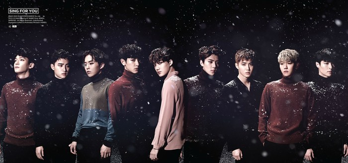
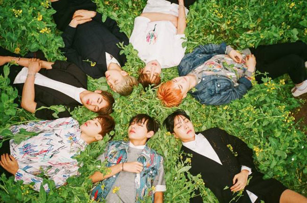

唱

EXO《EXODUS》
EXO是韩国SM Entertainment公司于2012年4月8日正式推出的12人男子组合。现以9名成员的形式展开活动。 2013年，EXO首张正规专辑后续主打曲《咆哮》被美国Billboard榜单选为2013最佳K-Pop音乐，正规一辑《XOXO》专辑销量突破100万张，并在2013年末的一系列颁奖典礼上取得全部大赏。 官方全球粉丝俱乐部确定正式名为“EXO-L”,“L”是“LOVE”的缩写，而且“L”又刚好在“K”和“M”之间，因此“EXO-L”既象征着所有喜欢EXO-K和EXO-M的粉丝，也象征着EXO与所有粉丝之间一心同体的羁绊。 继金建模后第一个连续三年获得唱片大赏
BTS《花样年华》
BTS(防弹少年团),拥有2AM、GLAM等艺人的韩国BigHit Entertainment旗下七人Hip-pop男团。 防弹有挡住子弹的意思而防弹少年团的含意是具有着承受10代的偏见和抑压的觉悟。 歌迷的官方名称为“A.R.M.Y”，有粉丝们也和防弹少年团一直一起的意思。同时也是“ Adorable Representative M.C for Youth ”的缩写（值得人景仰的青年饶舌代表)。 防弹少年团的许多歌曲都由成员参与创作，写的是自己的歌，拥有真实的感情，写出了年青一代的故事。